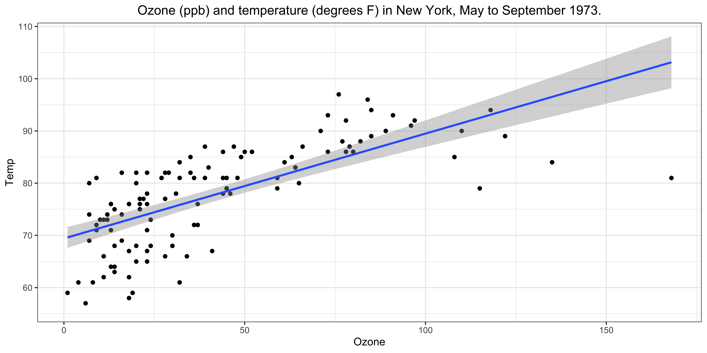
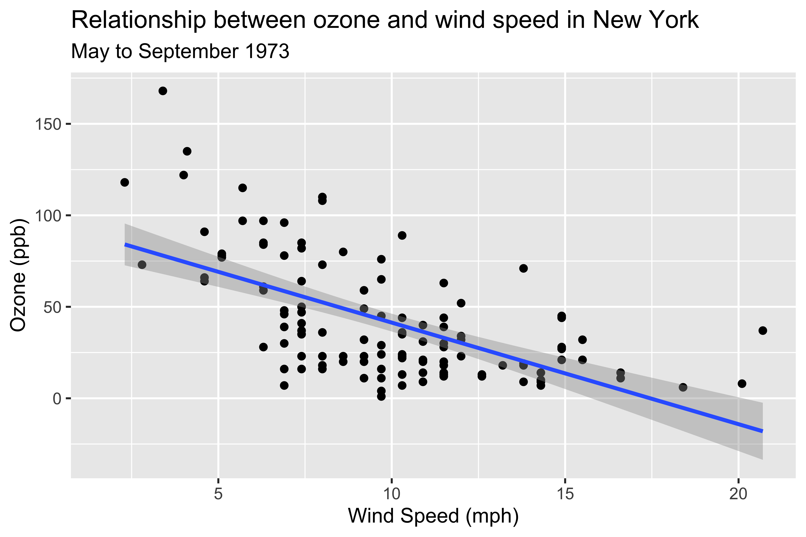
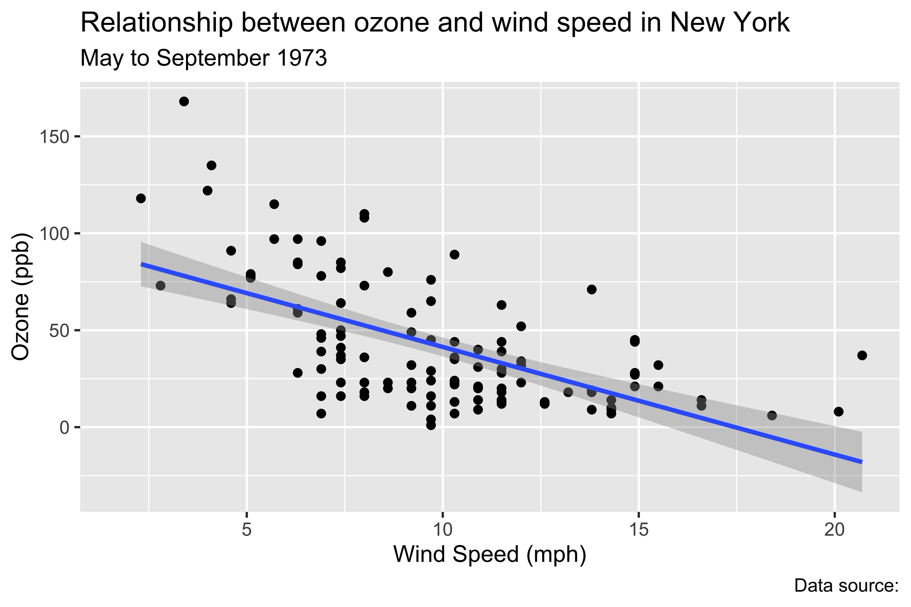
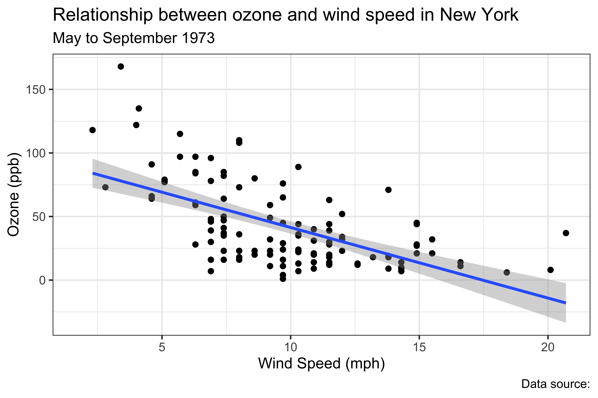
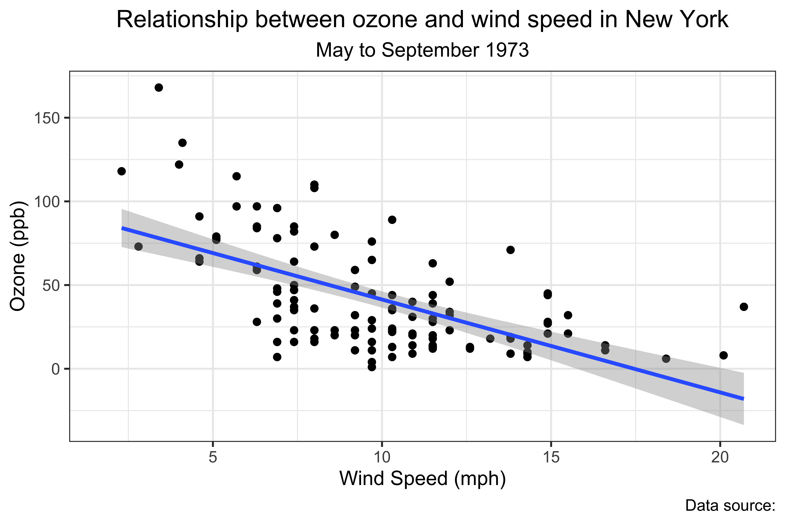
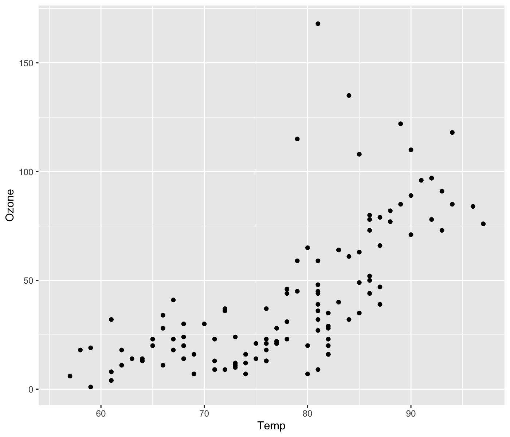
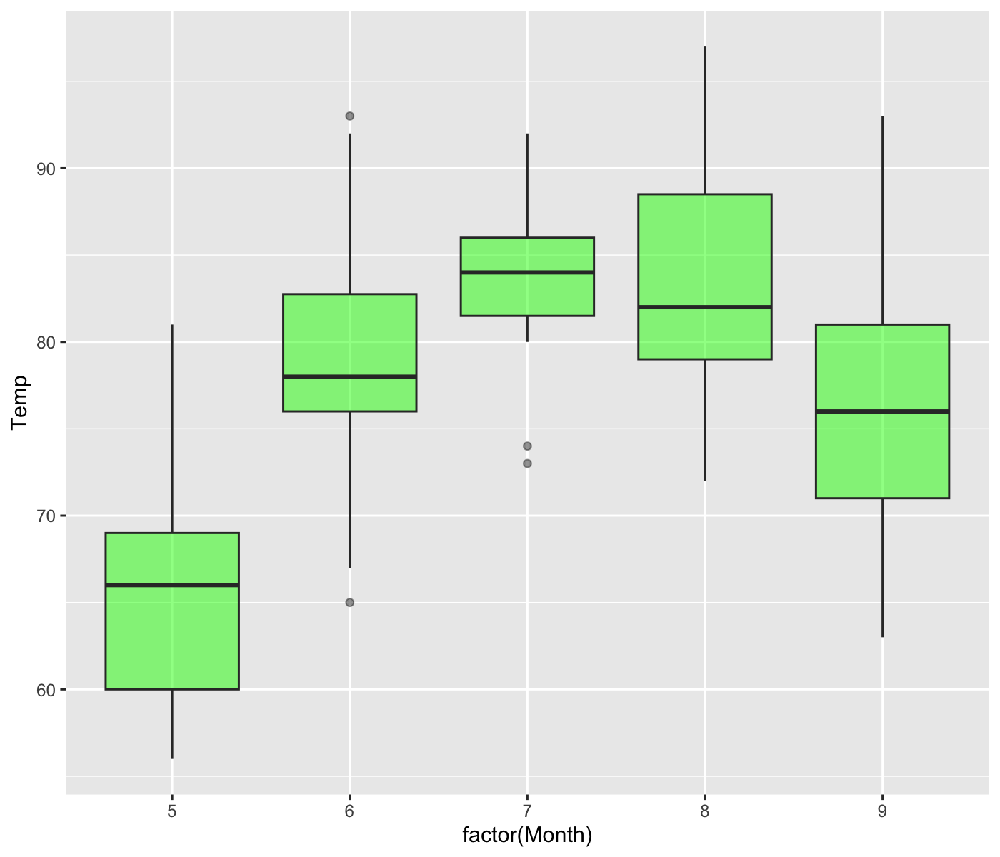
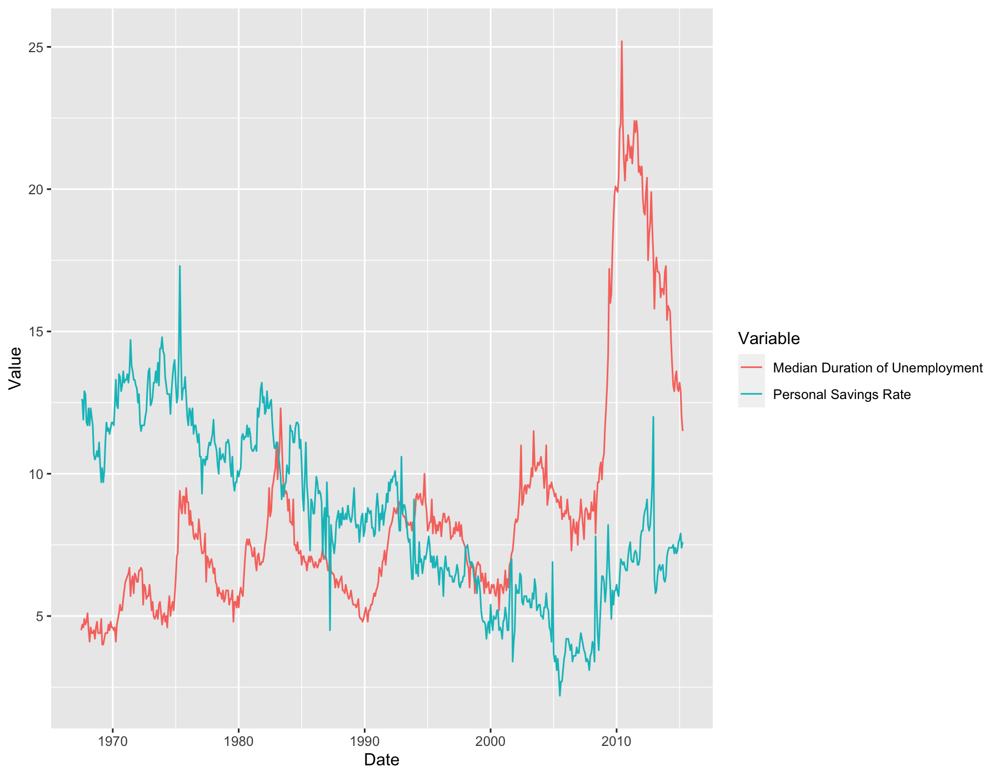
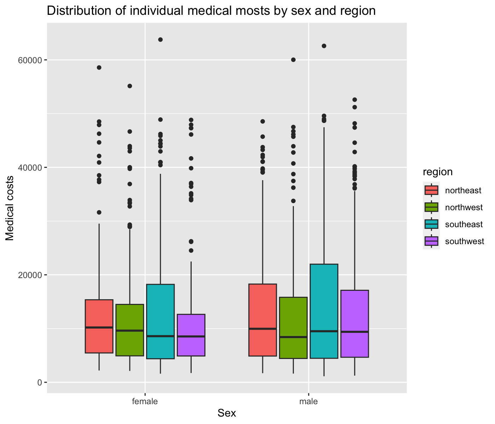
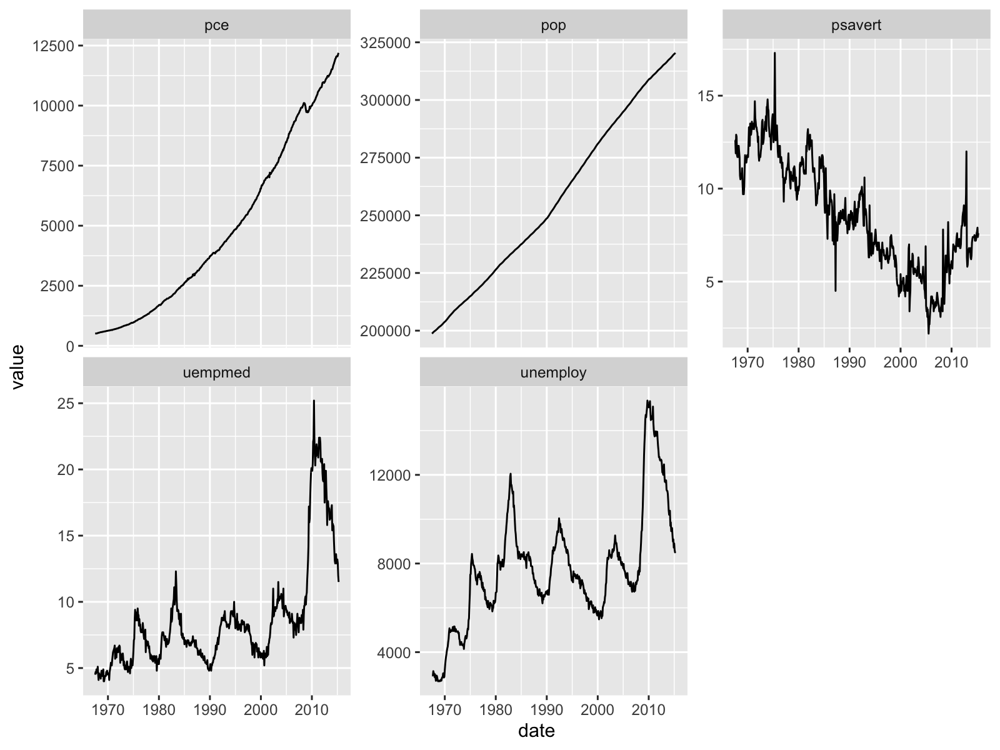

Department of Applied Economics
University of Minnesota
ggplot2 package to create figures.By the end of the lecture, you will be able to create the figures like the following examples using ggplot2 package.
There are many functions in the ggplot2 package to create figures, and today’s lecture is not a comprehensive guide to all of them.
We will focus on the basic functions to create the most common types of figures.
Install the package ggplot2 and gapminder locally if you haven’t already done so.
Once you have the package in R, let’s load it.
Note
There is a package called tidyverse, which is a collection of R packages designed for data science.
When you load the tidyverse package, the ggplot2 package is automatically loaded.
ggplot2
plot() and hist())
ggplot2 package provides more flexibility and customization options for creating figures with consistent syntax.
ggplot2 can make.ggplot2 (e.g., ggthemes, ggpubr, ggrepel, gganimate, etc.) allows you to create more complex figures.
ggplot2 views a figure as the collection of multiple independent layers.
# Create a canvas for the plot
ggplot(data = airquality) +
# Add x-axis
aes(x = Wind) +
# Add y-axis
aes(y = Ozone) +
# Add a scatter plot
geom_point() +
# Add a regression line
geom_smooth(method = "lm") +
# Change x-axis label
labs(x = "Wind Speed (mph)") +
# Change y-axis label
labs(y = "Ozone (ppb)") # Create a canvas for the plot
ggplot(data = airquality) +
# Add x-axis
aes(x = Wind) +
# Add y-axis
aes(y = Ozone) +
# Add a scatter plot
geom_point() +
# Add a regression line
geom_smooth(method = "lm") +
# Change x-axis label
labs(x = "Wind Speed (mph)") +
# Change y-axis label
labs(y = "Ozone (ppb)") +
# Add title and subtitle
labs(
title = "Relationship between ozone and wind speed in New York",
subtitle = "May to September 1973"
)
# Create a canvas for the plot
ggplot(data = airquality) +
# Add x-axis
aes(x = Wind) +
# Add y-axis
aes(y = Ozone) +
# Add a scatter plot
geom_point() +
# Add a regression line
geom_smooth(method = "lm") +
# Change x-axis label
labs(x = "Wind Speed (mph)") +
# Change y-axis label
labs(y = "Ozone (ppb)") +
# Add title and subtitle
labs(
title = "Relationship between ozone and wind speed in New York",
subtitle = "May to September 1973"
) +
# Add caption
labs(caption = "Data source:")
# Create a canvas for the plot
ggplot(data = airquality) +
# Add x-axis
aes(x = Wind) +
# Add y-axis
aes(y = Ozone) +
# Add a scatter plot
geom_point() +
# Add a regression line
geom_smooth(method = "lm") +
# Change x-axis label
labs(x = "Wind Speed (mph)") +
# Change y-axis label
labs(y = "Ozone (ppb)") +
# Add title and subtitle
labs(
title = "Relationship between ozone and wind speed in New York",
subtitle = "May to September 1973"
) +
# Add caption
labs(caption = "Data source:") +
# Set the theme
theme_bw() 
# Create a canvas for the plot
ggplot(data = airquality) +
# Add x-axis
aes(x = Wind) +
# Add y-axis
aes(y = Ozone) +
# Add a scatter plot
geom_point() +
# Add a regression line
geom_smooth(method = "lm") +
# Change x-axis label
labs(x = "Wind Speed (mph)") +
# Change y-axis label
labs(y = "Ozone (ppb)") +
# Add title and subtitle
labs(
title = "Relationship between ozone and wind speed in New York",
subtitle = "May to September 1973"
) +
# Add caption
labs(caption = "Data source:") +
# Set the theme
theme_bw() +
# Center the title and subtitle position
theme(
plot.title = element_text(hjust = 0.5),
plot.subtitle = element_text(hjust = 0.5)
)
geom function.The very general syntax for creating a plot with ggplot2 is as follows:
aes stands for aesthetic mappings. It tells ggplot2 how to map variables in the data to visual properties of the plot (e.g., x-axis, y-axis, color, shape, size, etc.)+ operator tells R that you’re adding another layer (e.g., line plot) to the current “canvas”.geom_*() functions.
geom_point() for scatter plot, geom_line() for line plot, etc.Let’s use the airquality data for this example.
airquality data is a built-in dataset in R. So, you don’t need to load it.airquality in the console to see the data. (Type ?airquality in the console for more information.)We will create a scatter plot of Ozone (ozone level in the air) and Temp (Maximum daily temperature in degrees \(F\)) from the airquality data.
The final plot should look like the following:

Step 1: Start with ggplot()
ggplot(data = dataset) initializes a ggplot object. In other words, it prepares a “canvas” for the plot.Step 2: Draw figures with geom_*() functions, and add to the current canvas use + operator
For example, we use geom_point() to create a scatter plot.
aes() to specify which variable you want to use for x and y axis.aes() is used to tell R to look for the variables inside the dataset you specified in ggplot(), and use the information as specified.
e.g., aes(x = Temp, y = Ozone) tells R to look for Temp and Ozone in the data, and to map the data to x-axis and y-axis, respectively.
These are basic steps to create a figure with ggplot2 package.
ggplot()
geom_*() function, and add to the current canvas with + operator.labs(), theme(), etc.aes() function.
geom_*() functions only require x variable (e.g., geom_histogram()).with(data, plot(column_x, column_y))Create a scatter plot of Temp and Wind from the airquality data.
In the plot you just created, let’s change the x-axis label to “Maximum temperature (degrees F)” and the y-axis label to “Wind Speed (mph)”. For this, use labs() function.
Hint:
labs(x = new_x_label, y = new_y_label)+ to add this layer to the plot.Create a scatter plot of Temp and Wind from the airquality data.
In the plot you just created, let’s change the x-axis label to “Maximum temperature (degrees F)” and the y-axis label to “Wind Speed (mph)”. For this, use labs() function.
Hint:
labs(x = new_x_label, y = new_y_label)+ to add this layer to the plot.You can create various plots with the ggplot2 package by choosing the appropriate geom_*() function for the desired plot type.
Here are some of the most commonly used geom_*() functions.
geom_point(): scatter plotgeom_line(): line plotgeom_bar(): bar plotgeom_boxplot(): box plotgeom_histogram(): histogramgeom_density(): density plot
geom_smooth(): draws an OLS-estimated regression line (other regression methods available) see this for full list of geom_*()
We can modify how plots look by specifying color, shape, and size.
Here are list of options to control the aesthetics of figures. You use these options inside the geom_*().
size: control the size of points and text
geom_point(size = 3)
color: control color of the points and lines
geom_point(color = "blue")
fill: control the color of the inside areas of figures like bars and boxes
geom_density(fill = "blue") fills the area under the density curve with blue coloralpha controls the transparency of the fill color
alpha=1 is opaque, alpha=0 is completely transparent, usually between 0 and 1shape: controls the symbols of point, it takes integer values between 0 and 25
geom_point(shape = 1) for circle, geom_point(shape = 2) for trianglesize = 3: makes the points larger.color = "red": changes the color of the points to red.shape = 1: changes the shape of the points to circle.fill = "blue": fills the bars with blue color.alpha = 0.5: makes the fill color semi-transparent.
alpha to see how the transparency changes.linewidth = 1.5: makes the line thicker.color = "purple": changes the color of the line to purple.linetype = "dotted": changes the line type to dotted.Create box plots of monthly Temp from the airquality data. Fill the boxes with green and make it semi-transparent (use alpha = 0.5).
The figure should look like the following:
Hint
Month as a categorical variable for the x-axis, but Month is a numeric variable in the data. How can we tell R to use it as a categorical (factor) variable?
factor() function to a Month to convert it to a factor variable in aes() in the geom_*() function.
So far, we specified aesthetic attributes outside of the aes() function. Consequently, all the geometric objects in the plot have the same color, shape, and size, etc.
geom_point(aes(x = var_x, y = var_y), color = "red").If you use those options inside the aes() function like aes(color = var_z), R will display different colors by group based on the value of var_z. Usually var_z is a categorical variable.
geom_point(aes(x = var_x, y = var_y, color = var_z)) displays a scatter plot where the points are colored differently based on the value of var_z.Example
Let’s create density plots of Temp for each month, and use different colors (fill in this case) for different Month.
Ozone and Temp in the airquality data. Let’s use different colors for different Month.Month.NOTE: Remember that we need to tell R to use Month as a categorical variable.
Ozone and Temp in the airquality data. Let’s use different colors for different Month.Month.NOTE: Remember that we need to tell R to use Month as a categorical variable.
So far, we used only one geom_*() function in a plot. But you can use multiple geom_*() functions in a single plot.
+ operator to add multiple geom_*() functions to the plot.Example Syntax
If an additional layer has the same aes() mapping, you can specify it only once in the ggplot().
Note
ggplot() prepares a plot object.ggplot() to use aes() mapping from the beginning, you don’t need to specify it again in the geom_*() functions.Ozone and Temp from the airquality data.geom_smooth() function.By default, x-axis, y-axis, and legend labels are the column names of the data, which are not always informative. Also, you might want to add a title and subtitle to the plot.
You can modify the labels, titles, and other annotations of the plot using labs() function.
Example Syntax
Let’s summarize what we have learned so far.
ggplot2 package.geom_*() functions in a single plot.labs() function.Let’s use the economics data, which is a dataset built into the ggplot2 package. It was produced from US economic time series data available from Federal Reserve Economic Data. This contains the following variables:
date: date in year-month formatpce: personal consumption expenditures, in billions of dollarspop: total population in thousandspsavert: personal savings rateuempmed: median duration of unemployment in weeksunemploy: number of unemployed in thousands1. Create a scatter plot of unemploy (x-axis) and psavert (y-axis). Add a simple regression line to the plot. Change the x-axis, y-axis, and fill legend labels to something more informative.
2. Create a bar plot of psavert by date. Use pop for fill color. Change the x-axis, y-axis, and fill legend labels to something more informative.
stat = 'identity' in the geom_bar() function to plot the actual values of pce.3. (Challenging) Create a multiple line plot taking day as x-axis and psavert and uempmed as y-axis, respectively. The output should look like the following.

For this exercise problem, we will use medical cost personal datasets descried in the book “Machine Learning with R” by Brett Lantz. The dataset provides \(1,338\) records of medical information and costs billed by health insurance companies in 2013, compiled by the United States Census Bureau.
The dataset contains the following variables:
age: age of primary beneficiarysex: insurance contractor gender, female, malebmi: body mass index, providing an understanding of body, weights that are relatively high or low relative to heightchildren: number of children covered by health insurancesmoker: smokingregion: the beneficiary’s residential area in the US; northeast, southeast, southwest, northwest.charges: individual medical costs billed by health insuranceDownload the data
Create a histogram of charges by sex in the same plot. Fill the boxes with different colors for each sex.
Create a scatter plot of bmi (x-axis) and charges (y-axis).
Now, create a scatter plot of bmi (x-axis) and charges (y-axis), and add regression lines by smoke (So, there are two regression lines: one for group of smokers and the other for group of non-smokers).
Create the following plot.

For this section, we will continue to use the economics and insurance data we used in the previous exercise problems.
You can partition a plot into a matrix of panels and display a different subset of the data in each panel. This is useful when you want to compare patterns in the data by group.
facet_wrap() makes a long ribbon of panels (generated by any number of variables). You can also wrap it into 2 rows.
Syntax:
vars(), specify variables used for faceting groups.ncol and nrow control the number of columns and rows (you only need to set one).scales controls the scales of the axes in the panel (either "fixed" (the default), "free_x", or "free_y", "free").Try it!
Play around with the facet_wrap() function in the code below. See how the choice of faceting groups, number of rows and columns and the scales of the axes affect the appearance of the plot.
facet_grid() produces a 2 row grid of panels defined by variables which form the rows and columns.
Syntax:
var_x and var_y in the rows and columns, respectively.ncol and nrow control the number of columns and rows (you only need to set one).scales controls the scales of the axes in the panel (either fixed (the default), free_x, or free_y, free).Try it!
So, when should you use facet_wrap() and facet_grid()?
In my opinion, if you have a single variable to make a facet, you should use facet_wrap(). Unlike facet_grid(), facet_wrap() can control the number of rows and columns in the panel.
If you have two variables to make a facet, you should use facet_grid().
In facet_grid(), you don’t always need to provide both rows and columns variables. If only one is specified, the produced plot will look like the one from facet_wrap() but you cannot wrap the panels into 2 rows.
See the following document: How can I set different axis labels for facets?. You can use the labeller argument in the facet_wrap() and facet_grid() function to modify the facet labels.
Here, I will show another way to modify the facet labels. You can
First, I re-define region and sex as factor variables. In doing so, I will add labels for each level of the variables. If labels are attached to the variables, ggplot use those names in the facet labels.
Now, the facet labels are changed to “North East”, “North West”, “South East”, and “South West” for the region variable.
So far, we have been using the same dataset for each layer of the plot. But you can use multiple datasets in a single plot.
Note
ggplot() at the beginning (e.g., ggplot(data = dataset)), the data applies to ALL the subsequent geom_*()s unless overwritten locally inside individual geom_*()s.geom_*()s.insurance_southwest is a subset of the insurance data where region is southwest.insurance_northeast is a subset of the insurance data where region is northeast.You can do something like this:
You can change the theme of the plot.
ggplot2 ships several pre-made themes that you can apply to your plots. (e.g, theme_minimal(), theme_bw() (I use this often), theme_classic()). See this.
ggthemes package provides additional ggplot themes. See this for full list of available themes.
theme() function let you tweak the details of all non-data related components of a plot (e.g., font type in the plot, position of the legend and title, etc.). There are so many components you can modify with the theme() function. See this for full list of options.
For more information, see:
For example, you can change the position of the title and legend with the following theme() options.
Two options + Use the ggsave() function from the ggplot2 package. + Use the “Export” button in the RStudio plot viewer.
Syntax:
filename: the name of the file (including path) to save the plot to. (e.g., filename = “Data/plot.png”)plot: the plot object to save.Run the following code on your RStudio. Make sure you are opening the RProject.
library(ggplot2)
library(rio)
insurance_url <- "https://raw.githubusercontent.com/stedy/Machine-Learning-with-R-datasets/master/insurance.csv"
insurance <- import(insurance_url)
ggplot(data = insurance) +
geom_boxplot(aes(x = sex, y = charges, fill = region)) +
labs(
x = "Sex",
y = "Medical costs",
title = "Distribution of individual medical mosts by sex and region"
)
# --- Sve plot --- #
ggsave(filename = "Data/insurance.png")
ggsave(filename = "Data/insurance.pdf")
ggsave(filename = "Data/insurance2.png", plot = plot_insurance):::
For this second section, you learned a few advanced topics in ggplot2.
Now, you know;
facet_wrap() and facet_grid().facet_wrap() and facet_grid().That’s it!
For this exercise problem, you will use the gapminder data from the gapminder package.
Find the number of unique countries in the data.
Calculate the mean life expectancy for the entire dataset.
Create a dataset by subsetting the data for the year 2007. Create a scatter plot of GDP per capita vs. life expectancy for the year 2007, color-coded by continent.
Create a bar plot showing the total population for each continent in 2007. Fill the bars with blue and set the transparency to 0.5.
Subset the data for the United States, China, India, and the United Kingdom. Create a line plot showing the change in life expectancy over time for these countries.
Create a scatter plot of GDP per capita vs. life expectancy for the entire gapminder dataset. Use facet_wrap to create separate plots for each continent.
Group the data by continent and calculate the mean GDP per capita for each continent for each year. Create a line plot showing the trend of mean GDP per capita for each continent over time.
For this exercise problem, we will use economics dataset from the ggplot2 package. You need to use data manipulation and visualization techniques using the data.table and ggplot2 packages.
economics dataset contains various economic indicators for the United States. We want to create a line plot showing the trends of all economic indicators over time. Each economic indicator is stored in a separate column in the data, and you can visualize each indicator by creating a single line plot, separately. But, there is a better way to do this. It should look like the following plot.
For this exercise problem, you will use “corn_yield_dt.rds” in the “Data” folder. I obtained this from USDA-NASS Quick Stats database. The data contains the county-level corn yield data (in BU / ACRE) for each major corn production state in the US Midwest from 2000 to 2022.
Load the data and take a look at it.
Convert the data to a data.table object. The Value column contains the corn yield data. Rename the column to yield.
Let’s derive the state-level annual average corn yield data by calculating the mean of corn yield by state and year. Create a line plot of the annual trend of corn yield in Minnesota by taking year for the x-axis and the derived mean yield for the y-axis.
Create line plots showing the trend of annual corn yield for each state in the same plot.
Create a facet plot showing each state’s annual corn yield trend. To compare the trends across states, use scales = "fixed".
Hint: state_alpha is the two-letter state abbreviation for each state.
yield by year. Add a line plot of this dataset to the plot you created in the previous step. Use red dashed line to represent this line.scale_color_manual() function.